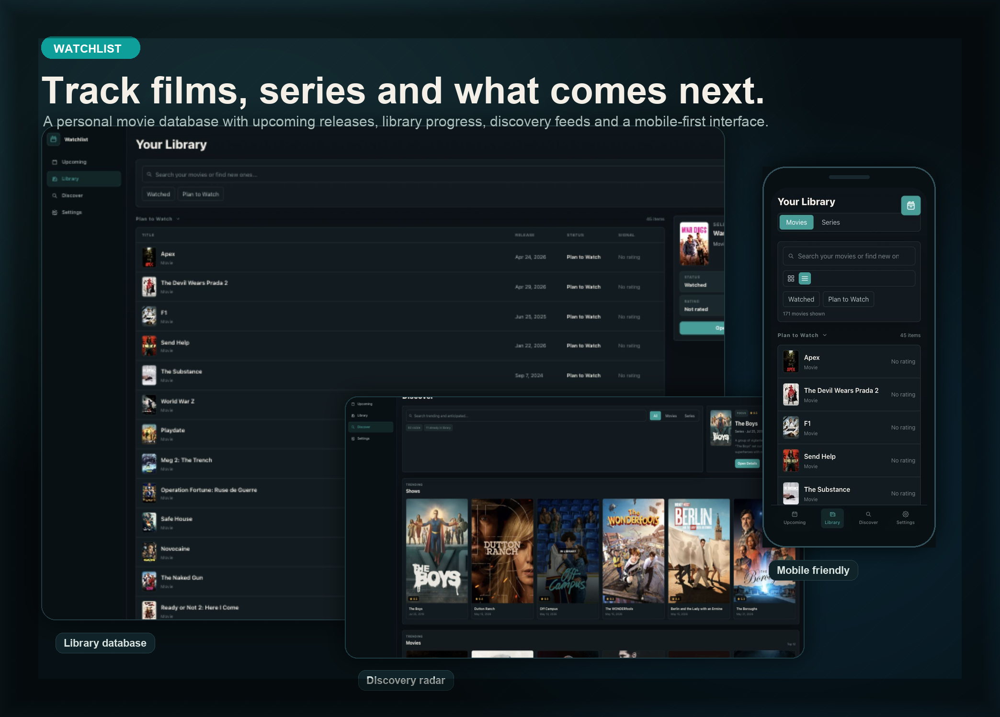

Track what you watch, discover what's next, and get AI-powered recommendations — all in one beautiful, responsive app.

Get personalized recommendations, find similar titles, and discover hidden gems — all powered by your own library data. The Copilot SDK searches live TMDB data so suggestions are always fresh and relevant, never hallucinated.
Ask the AI to suggest movies or series based on what you love. It understands your watch history, ratings, and preferences to surface titles you'll actually want to watch next.
Search TMDB's vast catalog, view detailed info on cast & crew, check where to watch across streaming services, and keep track of it all in your personal library.
Built mobile-first with a seamless experience on your phone. Bottom navigation, touch-friendly cards, and responsive layouts ensure you can manage your watchlist anywhere.
Add Watchlist to your iOS home screen for a native-like experience. No App Store needed — it runs as a full-screen Progressive Web App with its own icon, translucent scrolling, and safe-area support. Streaming deep links open titles directly in Netflix, Prime Video, and other native apps with a single tap.
A powerful set of features designed for movie and series enthusiasts.
Track movies and series with watched, watching, and plan-to-watch statuses. Add ratings and personal notes.
Live countdown badges for upcoming releases so you never miss a premiere.
See where to stream, rent, or buy any title across popular services.
Back up and restore your entire library as JSON. Your data, always portable.
Filter your library by genre and sort by title, release date, rating, TMDB score, or runtime. Find what you need fast.
Log each time you watch a title with the exact date. See your full rewatch history on every detail page.
Choose from several dark and light themes, including a True OLED mode with pure black surfaces and orange accents.
Deploy via Docker Compose with a single command. Multi-arch images for amd64 and arm64, published to GHCR.
Open source, free to use, and ready to deploy.
View on GitHub